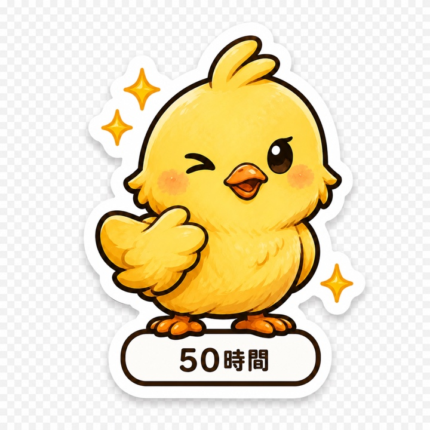
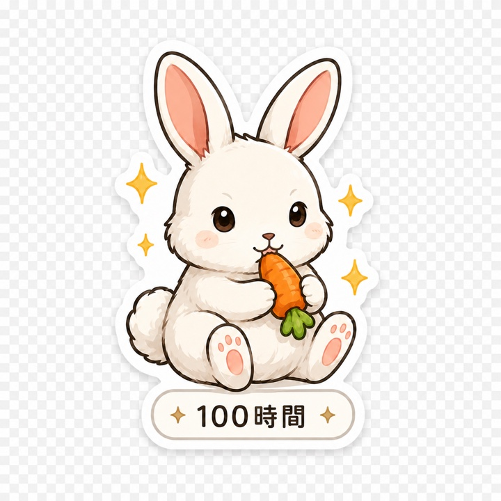
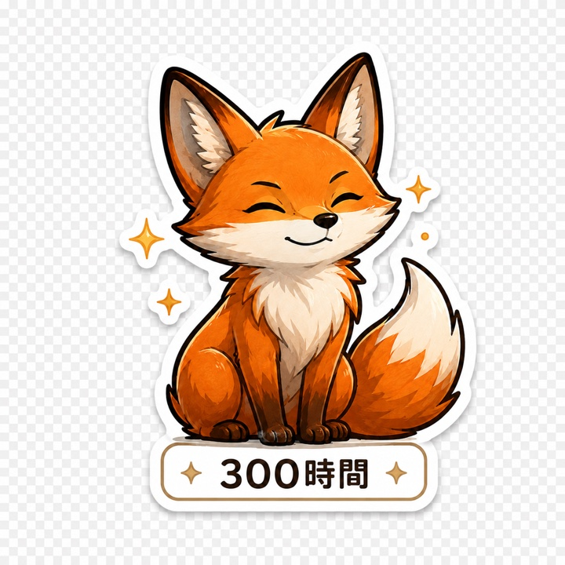

目標を登録する
勉強、運動、読書、副業。積み上げたいことを、短い名前で置いておきます。
ドリームタイマー
ドリームタイマーは、勉強・運動・読書・副業・仕事など、 目標に向けて使った時間を記録するタイマーアプリです。 小さな努力が、少しずつ残っていきます。

Story
10分だけ勉強した。少しだけ運動した。読みかけの本を、数ページだけ進めた。
大きな成果には見えなくても、何かに向き合った時間はあります。 ドリームタイマーは、その小さな時間をちゃんと残すためのアプリです。
How it works
勉強、運動、読書、副業。積み上げたいことを、短い名前で置いておきます。
始めるときに押すだけ。複雑な設定や細かい管理は必要ありません。
使った時間が自然に残ります。メモを添えれば、何をしたかも振り返れます。
Visualize
日々の記録は、ヒートマップのように残ります。 たくさんできた日も、少しだけできた日も、あとから見返すと 自分が続けてきたことに気づけます。

Badges
続けた時間に応じて、動物バッジが少しずつ解放されます。 50時間、100時間、300時間。積み上げた時間が、少しずつ形になります。
300時間の先にも、まだ見ぬバッジがあります。 すべてを先に見せすぎず、次の楽しみをそっと残しておきます。



Use cases

Goals
ドリームタイマーは、細かい達成率や残り時間で急かしません。 目標は、何を積み上げたいかを思い出すためのもの。
自分のペースで続けられるように、記録は静かに残り、 積み上げた時間だけが、そっと背中を押します。